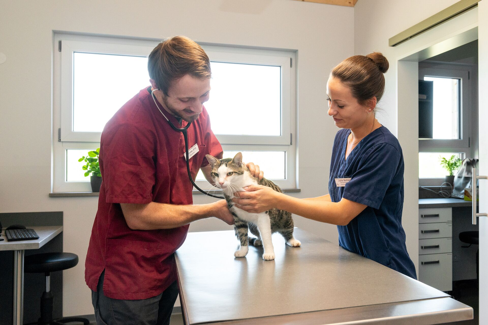
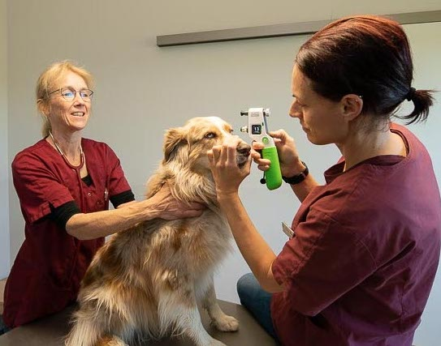
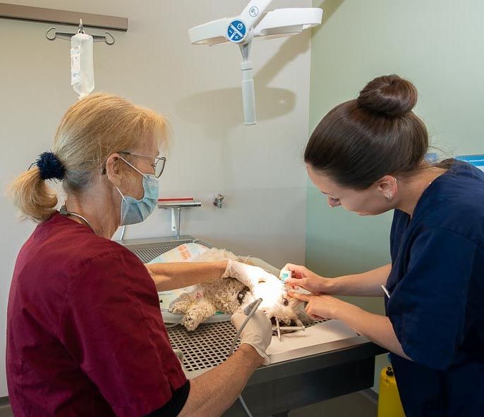
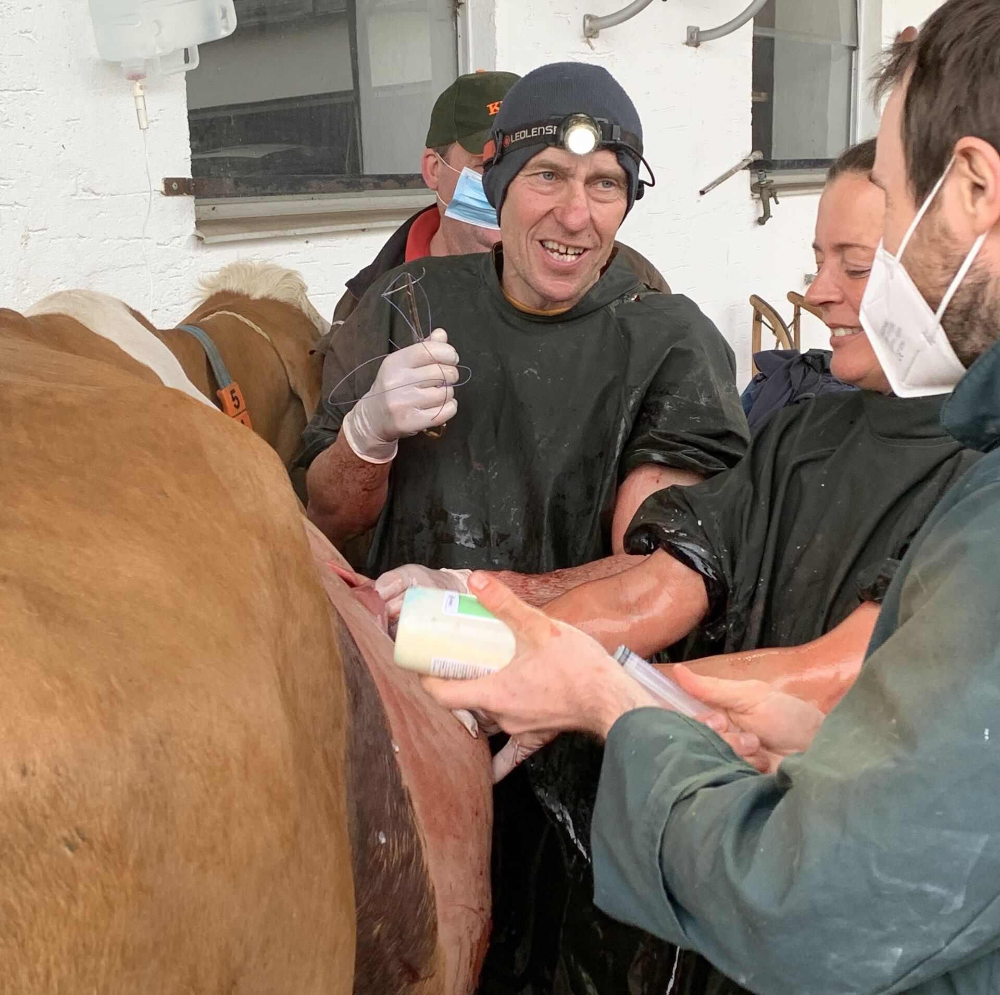
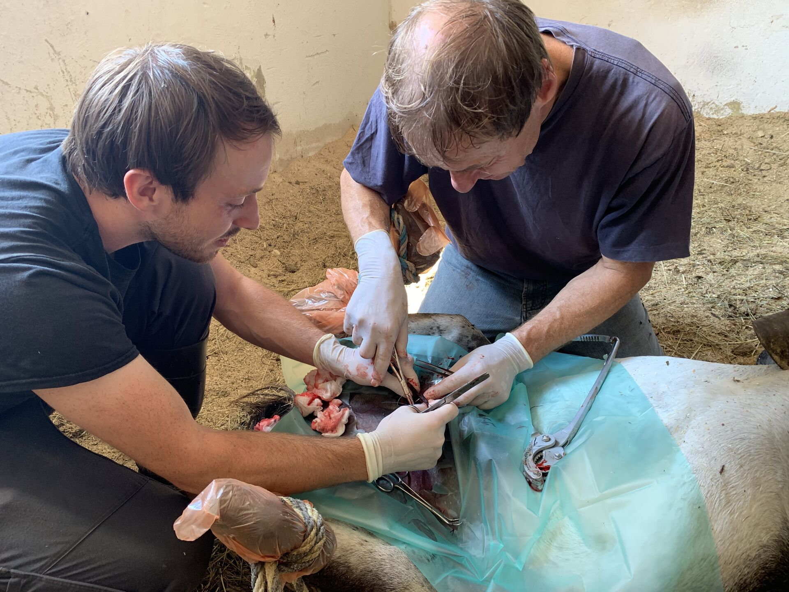
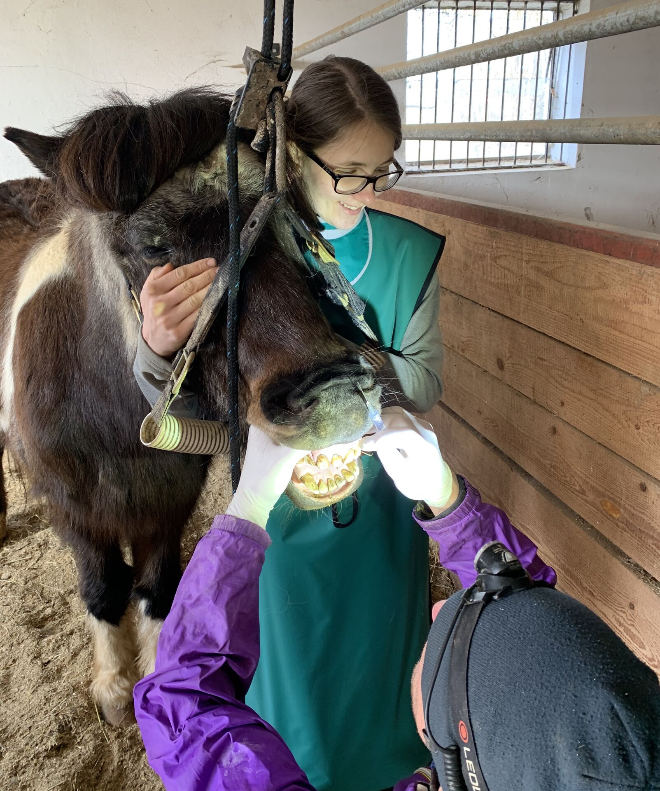

Leistungen Kleintiere
Durch unser großes Team sind wir in der Lage viele Haustierarten professionell zu behandeln.
Wir legen großen Wert auf eine persönliche Beziehung und gute Kommunikation zu unseren Kund*innen.
Vorsorge
- Impfungen nach Baukastensystem
- Parasitenprophylaxe
- Gesundheitschecks (auch vor und nach Auslandsaufenthalt)
- Fütterungsberatung


Diagnostik
- modernes digitales Röntgen
- Ultraschalldiagnostik
- Blut-, Harn, und Kotuntersuchungen im eigenen Labor und mit Partnerlaboren
- Deckzeitbestimmung Hündin
- Tonometrie (Bestimmung Augeninnendruck)
Behandlung
- Innere Medizin
-
Chirurgie/Elektrochirurgie
- Alle gängigen Weichteil-OPs
- Infos zu unserer Narkose finden Sie hier
- Gynäkologie/Andrologie
- Zahnbehandlungen
- Augenheilkunde

Wir haben bewusst darauf verzichtet jede Leistung im Einzelnen aufzuführen, sind jedoch gerne bereit Fragen zu Therapien oder diagnostischen Verfahren zu beantworten
Leistungen Großtiere
Wir bieten Ihnen das gesamte Spektrum der Rindermedizin einschließlich Operationen
(z.B. endoskopische Labmagenoperation, Magen-Darm-Chirurgie, Nabeloperationen, Klauenoperationen,
Kaiserschnitt, Kastrationen....).
Auch auf Herdenbasis findet eine Bestandsbetreuung statt.

Labmagenoperation

Zusätzlich behandeln wir auch gerne Schafe, Ziegen, Esel und Neuweltkameliden
Im Bereich der Pferdemedizin bieten wir alle ambulanten Behandlungen, wie z.B. Zahnbehandlungen, mobiles Röntgen, Gynäkologie, Kastration, Bronchoskopie
